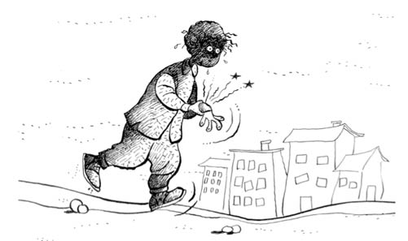

FELAKET YILI
Ben 4., kız kardeşim 1. sınıfa başladık, Bursa Emirbuhari İlkokulu. Babam da Işıklar Askerî Lisesi’nde edebiyat öğretmeni. Yaz tatilinde kardeşimin devam ettiği Kuran kursunu da dikkate alırsanız, ev tam ilim irfan yuvası hâlini almış durumda.
Baştan söyleyeyim; 4. sınıf, ilkokulun ergenliğe geçmiş hâlidir. İlk üç yıldaki “Ali top at” ve “Veli bari sen de topa bak”, “beş kere beş, aferin koca keleş” hâllerinden bir anda sıyrılıp dünyanın yuvarlak olduğu bilgisine doğru gitmektesinizdir. Matematikte kesir konusu ufaktan başlar ki çok can sıkıcıdır, üçün ikisi, benim üçün birini sen al falan derken anlaması iki yılınızı alır. Türkçedeki sıfatı, zamiri saymıyorum bile. Normalde hayatının en güzel oyun yıllarındaki o kadar çocuğu sınıflara doldurup da bunları kafalarına sokmaya çalışmaksa, artık âdetten olmuş. Bu kadar tıkma bilgiyle de okul ne kadar sevilir, ben okuyanların vicdanına bırakıyorum.
Okuluma, arkadaşlarıma alışmam üç beş ayı buldu. Şerif’imle ara sıra konuyu, sohbeti kovalarken laf kızlara, futbola mutlaka gelirdi. Bu okulda da sınıf arkadaşlarımdan ayağı yatkın olanlarla takımı kurmuş, yan sınıflara tebelleş olmuştuk. Yalnız 4A sınıfına dişimiz geçmiyordu. Nedeni de o sınıfın öğrenci kadrosuydu; yetmişli yıllarda Bulgaristan’dan gelen çocukların ağırlıklı olduğu bir sınıftı. Çoğu orada okudukları sınıfların bir altına yazdırılmıştı. Bizim sınıfta da göçmen çocuklarından epeyce vardı ama iki tanesi erkekti. Biri Gürsel, biri de Serçe lakabını taktığımız İsmail. “Serçe” deyince üff, nasıl da uçup sekip oynuyordur, sormayın. Nerdeyse bel hizamızı biraz geçiyordu boyu. Diğer sınıftakilerin boylarına uygun lakabı burada yazmam doğru olmaz. Çünkü biz de onların bellerine falan geliyorduk. Kulaklarına gider, yanlış anlarlar, neme lazım! Maç sonuçlarımız tam felaketti.
Anlatmıştım hani; önceki okulda tahtada yazılanı okuyamayıp kurda kuşa muhtaç, bilgiye susamış bir hâlde nasıl çırpındığımı... Bu hâl evde televizyona bakarken de devam edince babamın dikkatini çekti. Gözümü kısıp kısıp görmeye çalışmam bir süre sonra, “Yav, bizim oğlan ister misiniz çürüğe ayrılsın” gibi bir hava doğunca bu konuya eğilmek gerekti. Sağlık ve Bursa’daki her türlü zevat konusunda babamın akıl arkadaşı da Turan Amcamdı. O da askerdi. Ama ne asker! Pazara domates almaya giderken resmî kıyafetini çıkarmazdı, o kadar titiz. Babamsa daha servisten inerken “Pantolonumun altında şort olsa da direkt top sahasına insem” diyenlerden.
Babamla Turan Amca’nın dostlukları, askerî öğrenci olarak okudukları yıllara dayanıyor. Babam konuyu Turan Amca’ya açtı, “Torik, bizim oğlan görmüyor galiba” dedi. Turan Amca da, “Hemen Hikmet Akman’a götürelim Ali’m” dedi. “Torik”, Turan Amcamın iki lakabından biridir; diğeri “Albay”dı. Daha öğrenciyken takmışlar.
Setbaşı’nı bilen bilir; köprüsünün yanından Devlet Su İşleri’ne çıkan yokuştaki bir apartmanın birinci katında muayenehane. “Hikmet Akman” tabelası ve kapıdan girince sekreter masası. Doktor amca bizi çok güzel karşıladı.
Muayene etmeden önce damla damlattı gözlerime. Bir saat sonra iyice kontrol etti. Duvardaki harfleri okuttu, ben bir güzel okuyamadım. Babam hayretler içinde, “Bunu da mı görmedin?” falan diyor,Turan Amca, “Ali’m, okusa burada işi ne!” diyor. Neyse, vur tut, benim gözler için üç numarada anlaştılar. “O da bize olur, başkasına dörtten aşağı olmaz” denecek bir durum değildir bu. Reçeteyi aldık, doktor beye ücreti takdim etti babam. Turan Amcamla tanışıklığından dolayı büyük kolaylık gösterdi. “Aslında iş, güzel iş” dedim içimden. “Ver kâğıdı, al parayı! Düşünmeli bu işi!”
İş burada bitmedi tabii. Bu kâğıdın gözlüğe dönüştürüldüğü bir yere gittik. Oradaki amca da gözlüklü, ayrıca göbekli, orta yaşlarda, kel bir amcaydı. Kâğıdı evirdi çevirdi, bir reçeteye, bir bana baktı, “Bu numaraların hepsi bu çocuğun mu?” gibisinden yanağını, çenesini sıvazladı. Bu hareketi eczacı yapsa, “Yaşayacak mıyım?” diye anında sorar insan.
“Birkaç günü bulur camların gelmesi, çerçeve bakalım” dedi göbekli ve kel amca. Bana siyah, dört köşe, kalın kenarlı, plastik bir çerçeve baktılar. İlerde sunucu falan olur, şimdiden alışsın diye mi düşündü bilemiyorum. Camlar da hafif koyu olsun, güneşe de bakamıyor zaten, fikri de tuttu.
Gerçekten de üç beş gün sonra gözlüğü alıp ilk kez taktığımda, “Yav, etrafta bunca şey var, bana neden söylemediniz!” gibi bir his uyandı içimde. Aynadaki gözlüklü hâlime baktım önce... Anam! Beyaz Kelebekler’in rahmetli gitaristi gibi olmuşum. Camlar biraz koyu, çerçeve dibin koyu bir durumdayım. Bu hâlimi de mi görecektim, eyvahlar olsun!
Benim görmem neyse de, Buket de görecek. Görmem netleşmese hayatta takılacak şey değil aslında. Ama körlük canıma ne kadar tak ettiyse artık eve kadar gözlüğü çıkarmadım. Tam felaket bir görüntüdeyim. Boynuma bir papyon uydurup sahneye koyun beni, arkama bir saz, bir klarnet, kırk yıllık işim hazır. Bir de buna, benim taranmayan sarı kıvırcık saçları ekleyin. Durum içler acısı. Gözünüzün önüne getirin. Getirin getirin, bulaşıcı değil. Ve bu durumda okula gidilecek. Bu da felaket, iki. Üçüncü mü? Olmaz mı hiç!
Efendim, bizim Emirsultan’ın daha önce oturduğumuz Çekirge’ye göre oyun alanları daha fazlaydı. Civardaki arsalarda çok sağlam maçlar yapar, ara sıra da meyveye dalardık. Bir gün mahalleden çocuklarla arsada oyun peşindeyiz. İnşaat alanı gibi bir yerin civarına el arabası, kalas, kürek falan koymuşlar. Biz de kalasların arasındaki el arabalarında birbirimizi taşıyoruz. Araba olur da kaza olmaz mı! Olur tabii... Kalaslardan biri arabanın dengesini bozunca bir araba ve üç çocuk, bir metre yükseklikten toprağa çakıldık. İlk sersemlik sonrası, ki bu süre sessizlik dönemidir, Allah’ın çocuklara bir lütfüdür, o arada sağ kalınır, ufak tefek hasar tespiti yapılır ve arkasından yaşa uygun feryat dönemi başlar. “Şükür yaşıyoruz” anlamına gelir. Ancak bu feryat figan arasında sol kolum dikkatimi çekti; bilek kısmı çökmüştü. Parmaklar kıpırdıyor da bilek biraz biçimsiz miydi ne... Ben de koroyla karışık bağırıyorum ama benimki tam ağıt değil de şaşkın bir zırıltı; “Ulan bu böyle kalırsa gözlük işinden sonra tam maluliyet olur” vaziyetini anlatan manasız bir zırıltı. Göz ucuyla da sağ elimle desteklediğim sol koluma bakıyorum. Eve doğru giderken bizi gören kadınlardan biri kolumun kırıldığını söyledi yanındakine. Eve vardık. Annem beni görünce dili tutuldu neredeyse. Sağ olsun ev sahibimiz Güler Teyze ve Emir Abi -karşılıklı dairelerde oturuyoruz- duruma el koydular hemen; ben, annem ve Emir Abi taksiye atladığımız gibi yola çıktık. Emir Abi, “Gölcüklü’nün oraya” dedi şoföre. Onlar eski Bursalı. Meğer adam kırık çıkık işlerine bakıyormuş. Vardık mekâna. Girişte kolunu kanadını kırmış üç beş kişi daha oturuyor. Sıramız geldi. Şişmanca, ellili yaşlarda biri, halıda oturuyor, koluma zeytinyağı, yumurta falan sürüp sırt üstü uzanmamı söyledi. Anneme, “Kırılmış” dedi. Ben de “Ne! Kırılmış mı?” diye tekrarladım. Hani, “Ben gelirken sağlamdı, olduysa burada olmuştur” cinsinden itirazlı cümleler olur, onlara benzedi. Neyse, lafı uzatmayayım. Kolum yağdan yumurtadan yumuşadı sanırım. Gölcüklü, diziyle benim kırık bileğe bastırıp eliyle de terse doğru çekti. Sağlam, tahta bir çubuk iki elle dize bastırılıp kırılır ya, onun tam tersi. Çıkan çatırtı ve feryat, bu işte mutlaka olması gerekenlerden. Benzeri durum kovboy filmlerinde oluyor. Hani danayı yere yatırıp kıçına kızgın demirle harf basıyorlar. Hayvan “casss” diye bir sesten sonra böğürerek kaçıyor. Benim durumda kaçmak da yok ama çıkan ses hemen hemen aynı. Kol kartonla iki yerden sarılıp tülbentle boyuna asılıyor.
Bir bölümde üç felaket... Bu bölüm için gökten üç elma düşerse az olur, kasayla başınıza dökseler azdır.